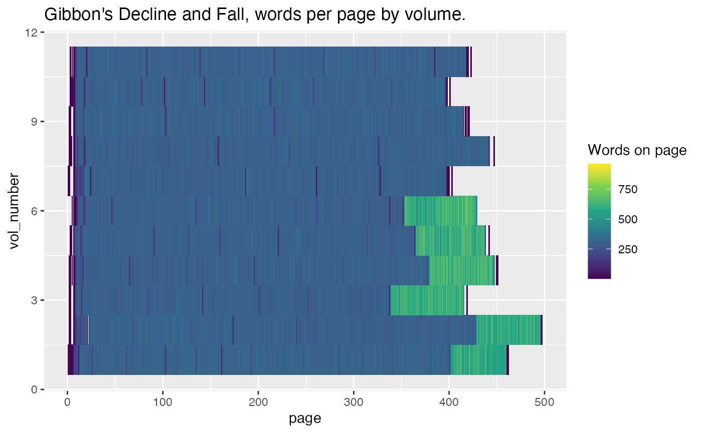
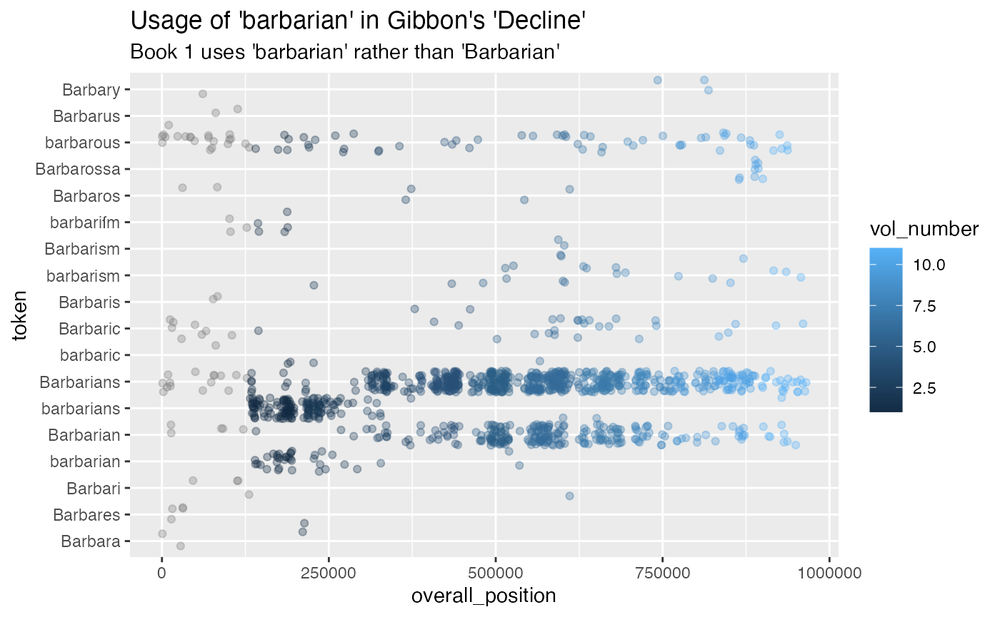

Hathidy.RmdThe Hathi Trust has made available 15 million volumes of text with word counts at the page level. 1
The purpose of this package is to allow you to quickly work with tidy-formatted data for any of these books. These features are useful input into a wide variety of tasks in natural language processing, visualization, and other areas.
First, some imports. hathidy is this package: ggplot2 is for visualization, and dplyr and tidytext together supply a number of useful functions for working with wordcount data. I would simply import tidyverse here, which would take care of almost everything here, but generally they don’t want you to put it in package dependencies.
library(hathidy)
library(ggplot2)
library(dplyr)
#>
#> Attaching package: 'dplyr'
#> The following objects are masked from 'package:stats':
#>
#> filter, lag
#> The following objects are masked from 'package:base':
#>
#> intersect, setdiff, setequal, union
library(tidytext)
library(stringr)
library(purrr)
library(tidyr)As an example, let’s take Edward Gibbon’s Decline and Fall of the Roman Empire.
First, I’ll define the corpus as a list of ids. This is the hardest part of the process; one good place to start from is the Hathifiles, which include basic bibliographic data for all ~17 million books in Hathi. (Be aware that only about 90-95% of all books in the Hathifiles have wordcount data available; the collection continues to grow.)
Or you can get a list of IDs from a standard identifier, whether a Hathi ID, an OCLC, or an LCCN. I don’t run the code below because I don’t want to install the hathi package from Github, but the code I used to make the list is below.
#hathi::hathi_bib(htid = "nyp.33433081597191")$items$htid %>% paste(collapse='", "') %>% cat('c("', ., '")', sep="")gibbon = c("nyp.33433081597316", "nyp.33433081597191", "nyp.33433081597209", "nyp.33433081597217", "nyp.33433081597225", "nyp.33433081597233", "nyp.33433081597241", "nyp.33433081597258", "nyp.33433081597266", "nyp.33433081597274", "nyp.33433081597282", "nyp.33433081597290", "nyp.33433081597308")
# The first volume in this set is notes.
gibbon_vols = tibble(htid=gibbon, vol_number = c(NA, 1:12))Once the HTIDs are known, we can load the data in. Note the global directory at the front here. It’s off by default, again so this can live online: but I strongly recommend filling in this field whenever using the package. You can store features in the current working directory, (probably in a folder called “features”), or use a global one. If you think you might work with Hathi more than once, having a local location might make sense: but for reproducible research, you should store just the files used in this particular project. If you don’t specify any location, feature counts will be downloaded to a temporary directory and deleted at the end of the session, which is less than ideal. (Among other things, your code will take much, much longer to run on a second or third run.)
# options(hathidy_dir = "~/hathi-ef/")
gibbon_books = hathi_counts(gibbon, cols = c("page", "token")) %>% inner_join(gibbon_vols)
#> Saving downloaded books to /var/folders/84/dvp0h0kn22qcx_0z_hn_b36w0000gn/T//RtmpQNAv0Z; to speed up subsequent runs and be polite to the HTRC servers, set a permanent local cache like 'options('hathidy_dir' = /Users/bschmidt/hathi-ef)'.
#> Joining, by = "htid"You can get an overview of just the words per page in these volumes. This instantly makes clear that there’s a difference between the last 6 volumes and the first six in how they treat notes.
gibbon_books %>%
group_by(page, htid, vol_number) %>%
summarize(count=sum(count)) %>%
ggplot() +
geom_tile(aes(x=page, y = vol_number, fill = count)) +
scale_fill_viridis_c("Words on page") +
labs(title = "Gibbon's Decline and Fall, words per page by volume.")
#> Warning: Removed 460 rows containing missing values (geom_tile).
A similar plot, but looking through all million words in the Decline, can let us see how often Gibbon speaks of “Barbarians.” Turns out, he starts capitalizing it in Book 2.
gibbon_books %>%
ungroup %>%
mutate(overall_position = 1:n()) %>%
filter(token %>% str_detect("[Bb]arbar")) %>%
group_by(token) %>% filter(sum(count) > 2) %>%
ggplot() + geom_point(aes(x=overall_position, y = token, color=vol_number), alpha = 0.33, position="jitter") +
labs(title="Usage of 'barbarian' in Gibbon's 'Decline'", subtitle="Book 1 uses 'barbarian' rather than 'Barbarian'")
Using tidytext, we can add tf_idf scores to every column. Here’s a chart of the highest TF-IDF words distinguishing each volume.
gibbon_books %>%
group_by(htid, token) %>%
summarize(count=sum(count)) %>%
bind_tf_idf(token, htid, count) %>%
filter(str_detect(token, "^[a-z]{4,}$")) %>% # Only lowercase words; remove to see proper names.
mutate(rank = rank(-tf_idf, ties.method = "random")) %>%
filter(rank <=5) %>% ggplot() + geom_text(aes(y=-rank, label = str_c(rank, ". ", token, " (", count, ")" )), x = 0, adj = 0) + facet_wrap(~htid, scales = "free_y") + theme_void() Finally, here’s a chart comparing word usage in the
word_counts = gibbon_books %>%
filter(!is.na(vol_number)) %>% # Drop the index
mutate(portion = ifelse(vol_number <= 6, "Western", "Eastern")) %>%
count(portion, token, wt=count)
wide_format = word_counts %>% group_by(token) %>% spread(portion, n, fill = 0.5)
ggplot(wide_format) + geom_text(aes(x=Eastern, y = Western, label=token), check_overlap=TRUE, size = 2.5) +
scale_x_log10() + scale_y_log10() + theme_minimal() +
geom_abline(intercept=0, slope = 1, lty=2, alpha=0.3, lwd=3)Boris Capitanu, Ted Underwood, Peter Organisciak, Timothy Cole, Maria Janina Sarol, J. Stephen Downie (2016). The HathiTrust Research Center Extracted Feature Dataset (1.0) [Dataset]. HathiTrust Research Center,http://dx.doi.org/10.13012/J8X63JT3.↩︎